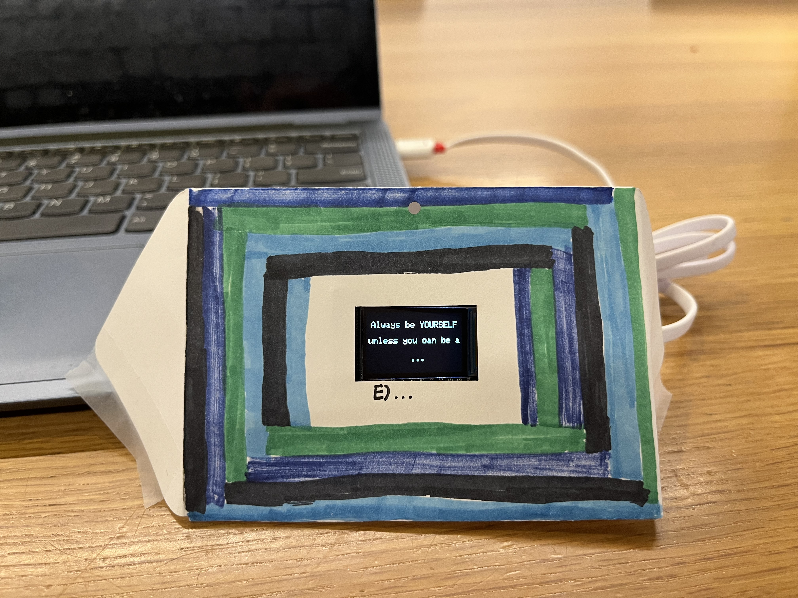
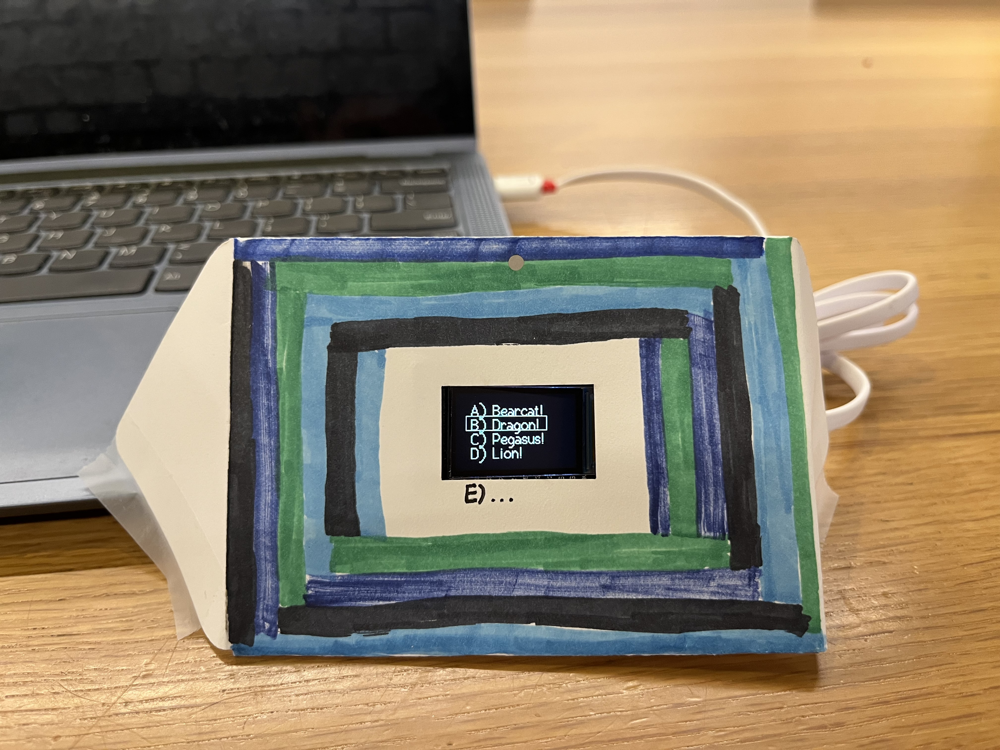
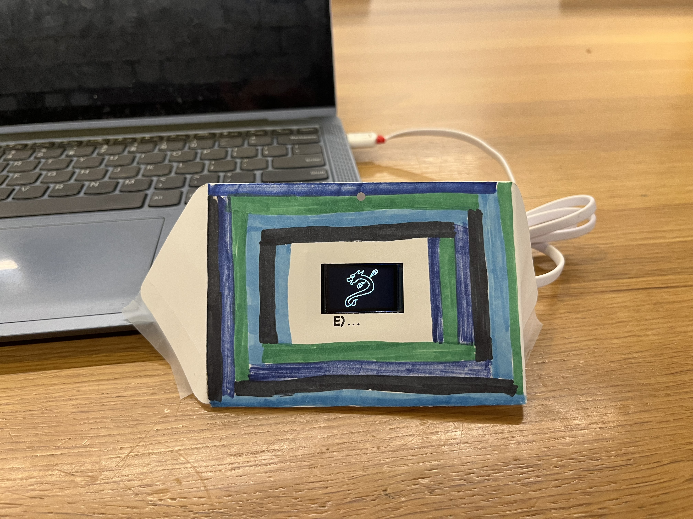

Next Adventure
A generative art project exploring identity transitions through randomized choice, text animation, and point-cloud morphing.
Video
Inspiration & Design Decisions
My inspiration for this project was transitioning between schools. Each school comes with its own identity and encourages students to fully engage with classes and traditions. I remember a shirt I had in middle school that said:
“Always be yourself unless you can be a Dragon, then be a Dealey Dragon.”
This is a lighthearted message, but when considering transitioning schools as taking on a new identity for the next few years of your life, it can hold some weight.
This display explores that idea through my own school mascots, ranging from elementary school to college. The experience begins with the quote I was inspired by and then displays a choice between four school mascots. One is chosen at random and flashes on the screen. It then morphs into the previous school mascots I had attended up to that point, a reflection on the previous places and people that have shaped me.



But there is a fifth choice, ever present on the envelope. It is left blank for the viewer to fill in. They can substitute their own school mascot or think about the other identities they have taken on outside of school.
For me, it also represents the future choices I have yet to make. I don't yet know what is after senior year, so it's a lingering thought.
Development Process
The project began with the quote animation. I wanted the letters to appear in a random order each time, materializing out of the darkness. My next focus was the selection screen where one mascot would be randomly chosen and displayed. At first the experience was going to end there, but from the beginning, I was interested in having the mascots morph between one another.
To achieve this effect, I first thought I would display images and then have random sections of one image fading out while random sections of the other image were added to the screen. To prepare the images for the display, I used a photo outline tool, saving as a JPG, and an image converter to make them compatible with the display.
But having the image show up and disappear in pieces didn’t provide the morphing effect I was looking for, so I transitioned to SVG files.
I used the same photo outline tool, saving as an SVG instead. Then a Python script, svg_to_points, samples points along SVG paths and converts them into lists of coordinates that can be displayed on the screen.
Converting the mascots into point clouds allowed each point to be mapped from one image to another. Rather than disappearing and reappearing in fragments, the mascots could continuously transform, creating a visual sense of identity shifting over time.
I then made subtle refinements so that the final mascot would fade rather than explode into a burst of points and so that the box on the selection screen would align better with the text.
When decorating the envelope, I decided to use the school colors to tie back into the mascots displayed on the screen. I also added an option E left blank so that viewers could imagine alternate possibilities or paths not yet taken.
Challenges
- Getting mascot outlines to fit the screen
- Making morphs feel smooth rather than chaotic
- Aligning the selection screen animation
- Managing memory constraints on the TTGO display